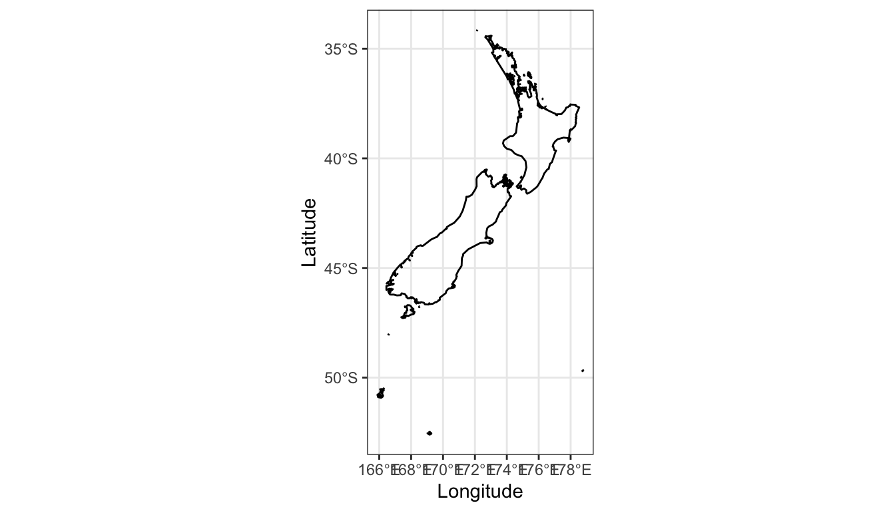
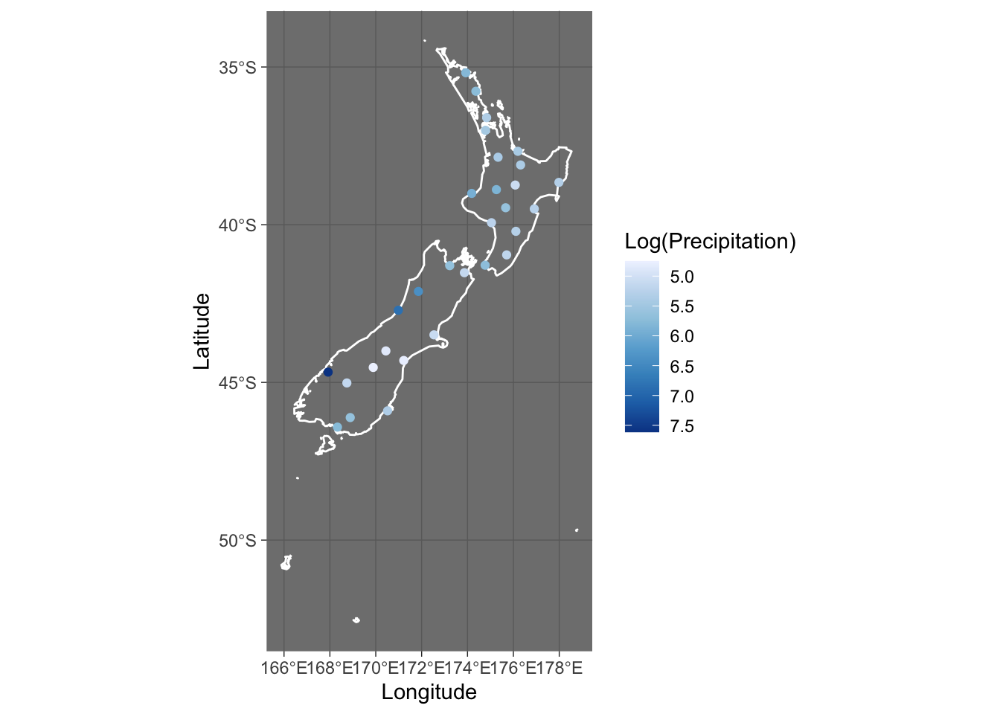
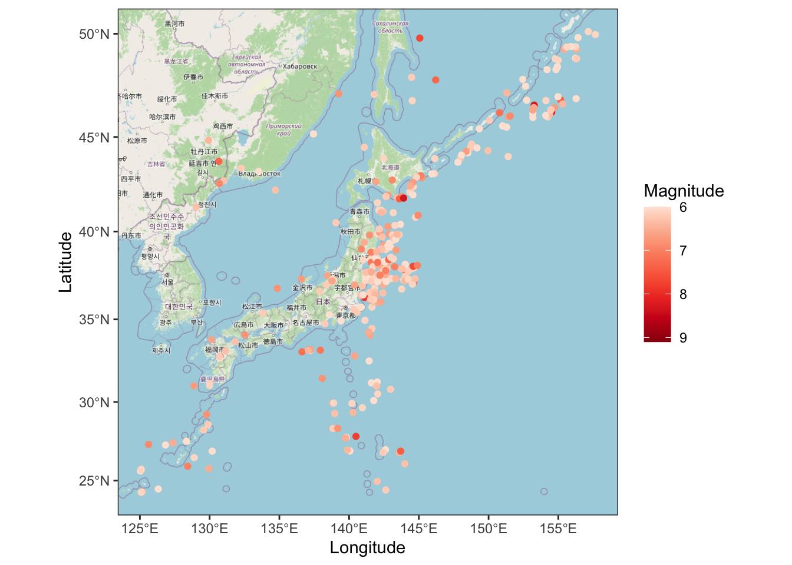

library( dplyr )
library( ggplot2 )
library( sf )
library( ggspatial )
library( prettymapr )MA22019 2025 - Solutions for Quiz 7
Mise en place
Quiz
Solutions
You may want to load the following packages before starting the exercises:
Exercise 1 - Types of spatial data
For each of the following applications, decide whether the data will be point-referenced, point pattern or lattice/areal data:
- Occurrence of tornadoes across Europe
The locations at which tornadoes occur are unknown/random and thus we will likely have point pattern data.
- Air pollution levels across a city
We may have information from measurement stations across the city. The locations of the measurement stations will be known and our variable of interest is the concentration of pollutants. Consequently, we have point-referenced data.
- Strength of mobile phone signal
Such data could be collected by measuring signal strength at a number of fixed locations. This would then give point-referenced data.
- Damage caused by the great spruce bark beetle across Western England
It is not feasible to investigate each individual tree. Instead, we will be given information on whether a woodland area is affected by the bark beetle or not. This would result in lattice / areal data.
- Sightings of Type Ia supernova
The locations of Type Ia supernova are unknown and we thus will have point pattern data. This is one application of spatial data analysis which does not consider observations located on earth. This results in a coordinate system different to the latitude/longitude system considered in most examples.
Exerise 2 - Rainfall across New Zealand
The file “NewZealandRain.csv” provides the aggregated rainfall between 01/09/2019 and 30/11/2019 for various locations across New Zealand. A shapefile for New Zealand is provided in the file “ShapeFileNZ.Rdata”.
- Load the shapefile and create a plot of New Zealand.
We load and plot the data as we did for the shapefile of Germany in Section 4.1.2 of the lecture notes:
NewZealand <- read_sf( "Shapefiles/NZ.shp" )
ggplot( NewZealand ) + geom_sf() + theme_bw() +
labs( x="Longitude", y="Latitude" )
- Load the data in “NewZealandRain.csv”. Add points to the plot in part a) which represent the locations contained in “NewZealandRain.csv”, and use the visual cue colour to visualize the amount of precipitation on logarithmic scale recorded at the various locations
We first load the weather observations:
Rain <- read.csv( "data/NewZealandRain.csv" )We again slightly adapt the code from Setion 4.1.2 in the lecture notes to combine the shapefile and the points in a single plot:
ggplot( NewZealand ) + geom_sf( color="white" ) + theme_dark() +
geom_point( data=Rain, aes(x=lon, y=lat, color=log(precipitation) ) ) +
scale_color_distiller( palette="Blues", trans="reverse" ) +
labs( x="Longitude", y="Latitude", color="Log(Precipitation)" ) 
- Use inverse distance weighting with power parameter \(p=2\) to estimate the amount of precipitation between 01/09/2019 and 30/11/2019 for the following two locations: (i) 177°E Longitude and 38°S Latitude; (ii) 166°E Longitude and 51°S Latitude. You should use the original data and not apply the logarithmic scale from part b). Submit your answers (to two decimal places) in the Moodle quiz.
The first step is to define the IDW() function we used in Section 4.2.2:
IDW <- function( X, S, s_star, p){
d <- sqrt( (S[,1]-s_star[1])^2 + (S[,2]-s_star[2])^2 )
w <- d^(-p)
if( min(d) > 0 )
return( sum( X * w ) / sum( w ) )
else
return( X[d==0] )
}We then adapt the code in Section 4.2.2 to use inverse distance weighting to get estimates for the amount of precipitation at the two locations:
coord <- cbind( Rain$lon, Rain$lat )
IDW( X=Rain$precipitation, S=coord, s_star=c(177,-38), p=2.0 )[1] 225.4837IDW( X=Rain$precipitation, S=coord, s_star=c(166,-51), p=2.0 )[1] 400.458We predict that the amount of precipitation for Location (i) was 225 mm, while it was 400mm for Location (ii).
Exercise 3 - Earthquakes across Japan
The files “Japan earthquakes.csv” contains data for earthquakes which affected Japan between 2011 and 2018. The data has been collected by the United States Geological Survey. We want to use spatial data analysis to investigate the locations of the strongest earthquakes.
- Load the data and extract the earthquakes with a magnitude of 6 or higher.
We start by loading the data
Earthquakes <- read.csv( "data/Japan earthquakes.csv" )We can now apply the filter() function from dplyr to extract the earthquakes we are interested in:
Earthquakes_strong <- filter( Earthquakes, mag>=6.0 )- Create a map to visualize the locations and magnitude of the earthquakes extracted in part a).
If we use the ggspatial package, we can directly create the map:
ggplot( Earthquakes_strong, aes(x=longitude, y=latitude) ) +
annotation_map_tile( zoom=5 ) +
geom_spatial_point( aes( color = mag ) ) +
scale_color_distiller( palette="Reds", trans="reverse" ) +
labs( x="Longitude", y="Latitude", color="Magnitude" ) +
theme_bw()
- Go to Moodle and complete the quiz.